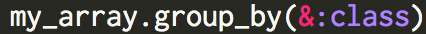
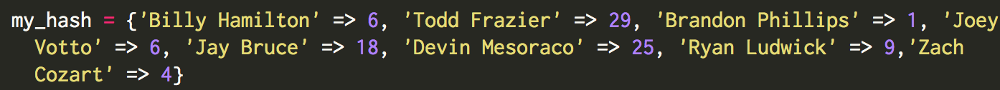
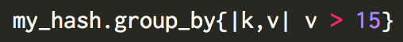
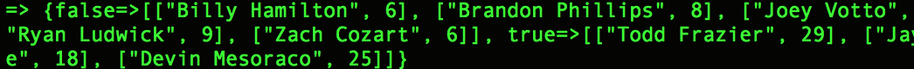

In my last blog, I talked about Hashes and Arrays in Ruby and how they were great for storing information like integers, strings, and floats. But what if we had an array that stored a bunch of info that didn't really belong together? This is where the Enumerable method “group_by” comes in to play.
For example, let’s say I have an array that stores integers, strings, floats, and an array.. We can use the group_by method to group everything together by class.
In the image below, I created an array that stores a string, an integer, a float, and an array. I stuck with the baseball theme from the last blog, just to stay consistent.

As you can see, I created an array called my_array. Inside my_array, I have a string: “Johnny Cueto”, an Integer: 20(Cueto’s Win Total), a Float: 2.25(Cueto’s ERA), and an Array: [“Dragons”, “Bats”, “Reds”](all the teams Cueto has played for).
Now what if I had more stats than just Cueto’s Win total and ERA.. Baseball is a game of numbers and there are stats for everything, so you can imagine how congested this array would look with a bunch of integers or floats. But what if we wanted to separate all of these stats by class? In the code below, this is exactly what I am telling it to do.

Now that we have plugged in our code, in return it will spit out a new hash, with the Key being our classes, and the value being what I inputed into the array.
So that's a great example of how to use the Enumerable method group_by. But what if we wanted to take our group_by method a step further? Let’s say we have a hash that contains every starter for the Cincinnati Reds and how many Home Runs each player hit in 2014. Please see below for what the code would look like:

Now that we have everything stored into our hash, we can call our group_by method again to figure out which players hit over 15 Home Runs.

Now let’s see what our group_by method spits out this time as a final product:

Pretty cool right? Our hash correctly tells us which players failed to hit 15 or more home runs by displaying their name(key) and Home Run(value) totals as “false”, while those who hit more than 15 Homers are listed as “true”.
With Votto and Bruce returning healthy to Spring Training in 2015 after injury plagued seasons last year, plus the addition of Marlon Byrd, let’s hope there will be at least 5 guys with more than 15 homers if we ran this same exercise next year.